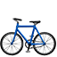

Disponibilizar os tempos de espera/andamento para peões nos semáforos dos atravessamentos pedonais.
Com a disponibilização dos tempos de espera/andamento para peões nos semáforos das passadeiras, potencia-se a redução dos níveis de ansiedade dos mesmos. Sugere-se começar a aplicação desta tecnologia (ver Figura 28) nas zonas com maior fluxo potencial de peões (Figura 5 - eixos prioritários pedonais).

Figura 28 | Exemplo de um semáforo para peões com tempos de espera/andamento.
Deslocações de bicicleta

Figura 29 | O espaço da bicicleta na cidade – imagens de referência. Fonte: Bike Rover.
A bicicleta surge como um veículo não poluente (ver Figura 30 e Figura 31), com elevada eficiência de espaço ocupado (ver Figura 30 barato tanto para o utilizador – ver Figura 32 – como para a entidade responsável pela implementação de infraestrutura), promotor de benefícios para a saúde e eficaz em termos de tempo para deslocações de curta distância (ver Figura 33), aumentado a zona de influência dos transportes públicos (ver Figura 34) e não sofrendo interferências dos congestionamentos.
As deslocações efetuadas de bicicleta são compatíveis com distâncias de 3 km, 5 km ou até mesmo 8 km. Levando-se em conta que na União Europeia 30% e 50% dos trajetos realizados com automóvel cobrem distâncias inferiores a 3 e 5 km, respetivamente, percebe-se que a bicicleta pode vir a desempenhar um papel relevante na mobilidade urbana.
| Impacto |  |  |
 |
|||
|---|---|---|---|---|---|---|
| Consumo de espaço | 100 | 100 | 10 | 8 | 1 | 6 |
| Consumo de energia primária | 100 | 100 | 30 | 0 | 405 | 34 |
| CO2 | 100 | 100 | 29 | 0 | 420 | 30 |
| Óxidos de azoto | 100 | 15 | 9 | 0 | 290 | 4 |
| Hidrocarbonetos | 100 | 15 | 8 | 0 | 140 | 2 |
| CO | 100 | 15 | 2 | 0 | 93 | 1 |
| Poluição atmosférica ambiental | 100 | 15 | 9 | 0 | 250 | 3 |
| Risco de acidente induzido | 100 | 100 | 9 | 2 | 12 | 3 |
Figura 30 | Comparação dos diversos modos de transporte, sob ponto de vista ecológico, em relação ao automóvel particular para uma deslocação equivalente de pessoas/quilómetros. Fonte: Página 17, Quadro 1.1, CE, Cidades para Bicicletas Cidades de Futuro, 2000. :oncoming_taxi: Automóvel com catalisador. É necessário recordar que o catalisador apenas é eficaz quando o motor está quente. Nas curtas distâncias percorridas em cidade, não se pode contar com o real benefício antipoluição. Base = 100 (automóvel particular sem catalisador).
| Tipo de impacto | Magnitude |
|---|---|
| Descongestionamento das ruas | 30% |
| Redução da poluição pelos veículos a motor (englobando todos os tipos) | 25% |
| Redução das emissões de monóxido de carbono (CO) | 36% |
| Redução das emissões de hidrocarbonetos (CH, apenas para os automóveis) | 37% |
| Redução das emissões de dióxido de azoto (NO2) | 56% |
| Redução do consumo de gasolina (apenas para os automóveis) | 25% |
| Redução do número de pessoas afectadas pela poluição sonora | 9% |
| Redução do efeito de barreira dos grandes eixos | 42% |
Figura 31 | Estimativa dos eventuais efeitos a longo prazo de uma política a favor da bicicleta em Graz, Áustria (252 000 habitantes). Fonte: Página 17, Quadro 1.2, CE, Cidades para Bicicletas Cidades de Futuro, 2000.
| Rubrica | Base de avaliação de custos | Custos anuais (EUR) |
|---|---|---|
| Poluição atmosférica | Custo adicional dos conversores catalíticos | 220.000 |
| Poluição atmosférica | Custo adicional da gasolina sem chumbo | 25.000 |
| Ruído | Imposto relativo à poluição sonora cobrado no combustível | 10.000 |
| Infraestruturas | Taxas relativas ao espaço necessário para o estacionamento | 3.100.000 |
| Consumo energético | Consumo médio | 400.000 |
| Congestionamentos | Consumo suplementar devido a uma circulação não fluída durante 5 minutos por automóvel em média | 485.000 |
| Imobilização de recursos | Recursos necessários para a produção de 15.000 veículos suplementares, repartidos por ano | 160.000 |
Figura 32 | Cálculo das economias que a utilização da bicicleta permitiria nas deslocações entre o domicílio e o emprego em Groninga. Fonte: Página 17, Quadro 1.3, CE, Cidades para Bicicletas Cidades de Futuro, 2000.

Figura 33 | Comparação dos tempos de deslocação numa distância de 8 km (tempo contado porta-a-porta). Fonte: Página 11, CE, Cidades para Bicicletas Cidades de Futuro, 2000.
|Velocidade média | Distância percordia em 10 minutos | Zona de influência ---|---|--- :walking: |5 km/h| 0,8 km | 2 km2 :bike:|20 km/h| 3,2 km | 32 km2
Figura 34 | Zona de influência dos transportes públicos, com e sem integração com a bicicleta. A bicicleta pode contribuir para tornar os transportes públicos mais atraentes em virtude de uma melhor acessibilidade, com base numa duração de deslocação invariável de 10 minutos, a tomada em consideração da clientela susceptível de efectuar a primeira parte do trajecto em bicicleta multiplica por 15 a zona de influência de uma paragem de transportes públicos Fonte: Página 20, Quadro 1.4, CE, Cidades para Bicicletas Cidades de Futuro, 2000.